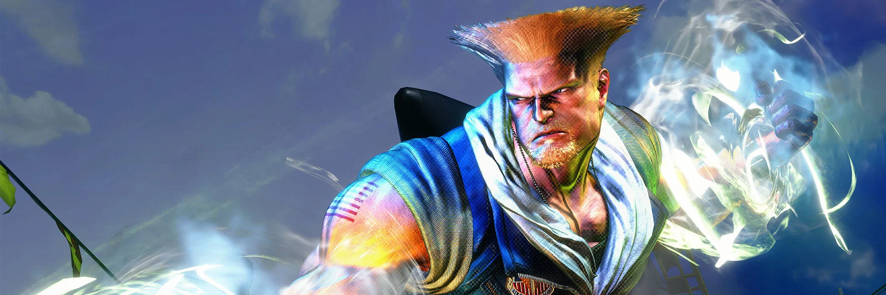
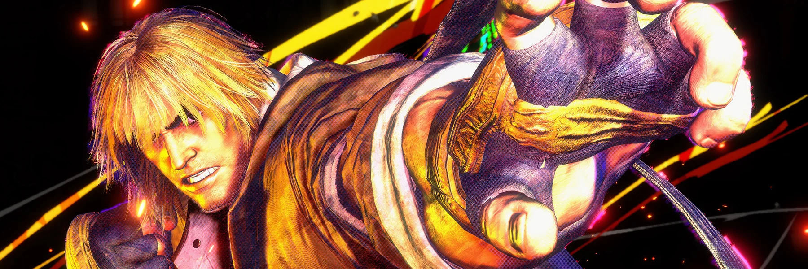
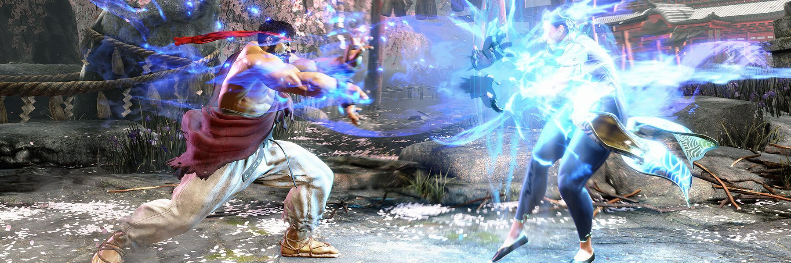
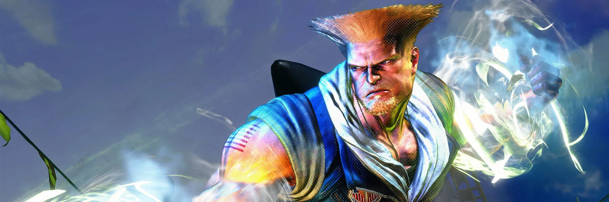
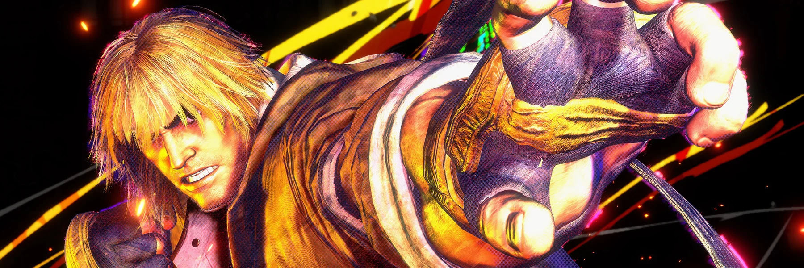
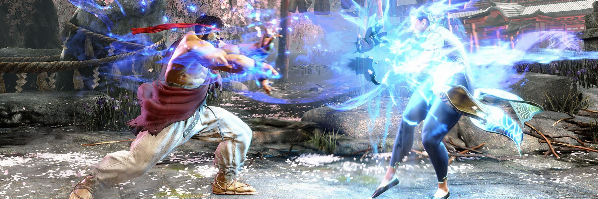
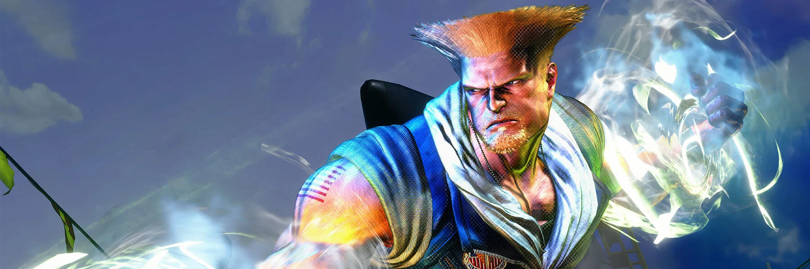
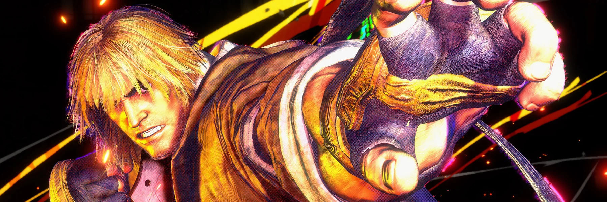
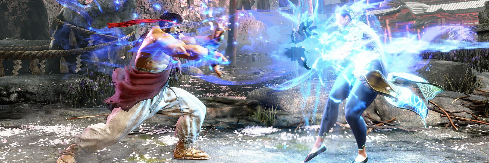
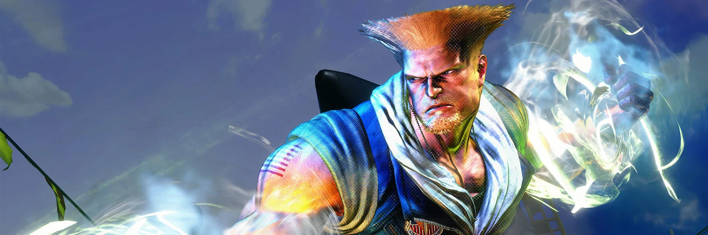
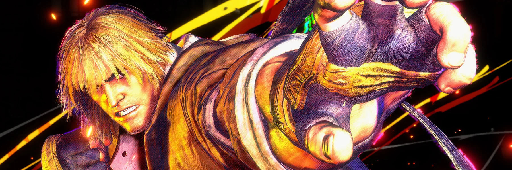
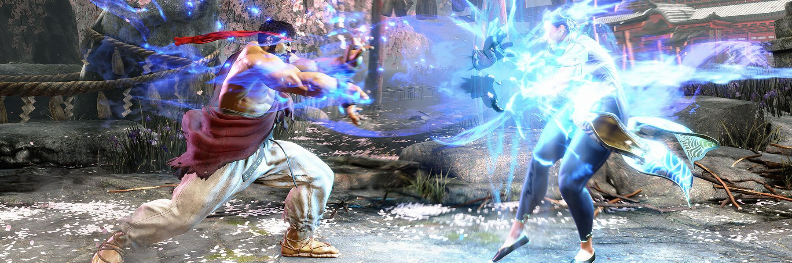
Ryu é um artista marcial que viaja pelo mundo em busca de desafios para aprimorar suas habilidades de luta. Ele foi treinado por seu mestre Gouken e é conhecido por sua busca pela verdadeira essência do combate.
Golpes:
Hadouken: Ryu lança uma bola de energia que avança em direção ao oponente. Essa é uma das técnicas mais básicas e icônicas do jogo. Para executar, pressione para baixo, e depois diagonalmente para frente, acompanhado de um botão de soco.
Shoryuken: Um poderoso uppercut em que Ryu salta para o ar, desferindo um soco vertical. É uma técnica de anti-aéreo eficaz e também pode ser usada como um ataque de proximidade. Para executar, pressione para baixo e depois diagonalmente para cima, acompanhado de um botão de soco.
Tatsumaki Senpukyaku: Ryu gira em alta velocidade, desferindo uma série de chutes giratórios enquanto se move em direção ao oponente. É excelente para controlar o espaço e iniciar combos. Para executar, pressione para baixo e depois diagonalmente para trás, acompanhado de um botão de chute.
Shinku Hadouken: Um Hadouken mais poderoso e concentrado que causa mais danos. Essa é uma versão aprimorada do Hadouken. Para executar, realize o movimento do Hadouken, mas mantenha pressionado o botão de soco por mais tempo.
Metsu Shoryuken: Uma versão mais potente do Shoryuken, onde Ryu executa uma sequência de socos giratórios em alta velocidade. Esse é um de seus ataques mais poderosos e é geralmente ativado como um Super Combo ou Ultra Combo.
Ken é um amigo de infância e rival de longa data de Ryu. Ele também foi treinado por Gouken e compartilha muitas das mesmas técnicas de luta que Ryu. Ken é um lutador talentoso e carismático que busca constantemente superar seus limites.
Golpes:
Hadouken: Ken lança uma bola de energia que avança em direção ao oponente. Assim como Ryu, ele é capaz de executar essa técnica clássica das artes marciais. É ativado pressionando para baixo, e depois diagonalmente para frente, acompanhado de um botão de soco.
Shoryuken: Um poderoso uppercut em que Ken salta para o ar, desferindo um soco vertical. É uma técnica de anti-aéreo eficaz e também pode ser usada como um ataque de proximidade. Para executar, pressione para baixo e depois diagonalmente para cima, acompanhado de um botão de soco.
Tatsumaki Senpukyaku: Ken gira em alta velocidade, desferindo uma série de chutes giratórios enquanto se move em direção ao oponente. É excelente para controlar o espaço e iniciar combos. Para executar, pressione para baixo e depois diagonalmente para trás, acompanhado de um botão de chute.
Shinryuken: Ken executa um poderoso golpe giratório enquanto se eleva no ar. É um ataque especial que pode causar danos significativos ao oponente. É realizado pressionando para baixo e, em seguida, para frente, acompanhado de um botão de soco.
Rolling Sobat: Ken executa um chute giratório horizontal, atingindo oponentes à sua frente. É útil para manter a pressão sobre o oponente e abrir espaço. Para executar, pressione para trás e, em seguida, para frente, acompanhado de um botão de chute.
Chun-Li é uma agente da Interpol que busca vingança contra a organização criminosa Shadaloo, que é responsável pela morte de seu pai. Ela é uma lutadora talentosa e habilidosa em artes marciais chinesas, conhecida por sua agilidade e força.
Golpes:
Kikoken: Chun-Li lança uma bola de energia que avança em direção ao oponente. Esse é um dos seus golpes mais básicos e é ótimo para controlar o espaço no campo de batalha. É executado pressionando para trás e, em seguida, para frente, acompanhado de um botão de soco.
Hyakuretsukyaku (Lightning Legs): Um ataque rápido de chute múltiplo que Chun-Li usa para controlar o espaço em torno dela. Esse movimento é excelente para pressionar oponentes e iniciar combos. É ativado rapidamente pressionando repetidamente os botões de chute enquanto Chun-Li está de pé.
Spinning Bird Kick: Chun-Li gira no ar com as pernas estendidas, criando um ataque giratório. Esse movimento é útil para anti-aéreo e para escapar de situações de pressão. É realizado pressionando para baixo e, em seguida, para cima, acompanhado de um botão de chute.
Hazanshu: Chun-Li executa um salto frontal seguido de um chute descendente, podendo atravessar ataques baixos do oponente e iniciar combos. Esse movimento é realizado pressionando para baixo e, em seguida, para cima e um botão de chute.
Spinning Bird Kick Aéreo: Uma variação do Spinning Bird Kick que Chun-Li executa enquanto está no ar. Esse é um ataque aéreo útil para controlar o espaço e surpreender o oponente. É realizado enquanto Chun-Li está no ar, pressionando para baixo e, em seguida, para cima e um botão de chute.
Guile é um oficial da Força Aérea dos Estados Unidos em uma missão para vingar a morte de seu amigo Charlie Nash, que foi assassinado pela Shadaloo. Ele é conhecido por sua técnica de ataque "Sonic Boom" e seu estilo de luta baseado em artes marciais e wrestling
Golpes:
Sonic Boom: Guile executa um movimento em que ele cria uma onda de choque sônica que se move horizontalmente pelo palco. Esse é seu golpe mais icônico e é realizado pressionando para trás e, em seguida, para frente, acompanhado de um botão de soco.
Flash Kick: Um poderoso chute vertical que Guile pode executar enquanto está agachado. Esse movimento é excelente para anti-aéreo, defendendo-se contra ataques aéreos do oponente. É executado pressionando para trás e, em seguida, para frente, acompanhado de um botão de chute.
Double Somersault Kick: Uma variação mais potente do Flash Kick, onde Guile executa dois chutes giratórios no ar em rápida sucessão. Esse movimento é geralmente ativado como um Super Combo ou Ultra Combo.
Reverse Spin Kick: Guile executa um chute giratório para trás, atingindo oponentes que estão próximos. Esse movimento é realizado com um movimento de carga para baixo seguido de um movimento para cima e um botão de chute.
Sonic Hurricane: Um ataque especial de longa distância, onde Guile dispara uma onda de choque sônica mais poderosa que a Sonic Boom. Esse movimento é geralmente ativado como um Super Combo ou Ultra Combo.
Blanka é um lutador brasileiro que foi exposto a radiação na Amazônia, o que o transformou em um ser com pele verde e a habilidade de gerar eletricidade. Ele é muitas vezes retratado como um selvagem da selva, mas na verdade é um homem gentil que busca reconectar com sua mãe.
Golpes:
Electric Thunder: Blanka gera eletricidade ao redor de seu corpo, criando uma barreira de dano para repelir ataques de curta distância. Esse movimento é ativado pressionando rapidamente os botões de soco enquanto Blanka está próximo ao oponente.
Rolling Attack: Blanka se enrola em uma bola e rola em direção ao oponente, causando danos e podendo atravessar certos ataques inimigos. Esse movimento é executado com um movimento de carga para trás seguido de um movimento para frente e um botão de soco.
Vertical Rolling: Blanka rola verticalmente para cima em direção ao oponente, o que pode ser usado tanto como uma tática de evasão quanto um ataque surpresa. Esse movimento é realizado com um movimento de carga para baixo seguido de um movimento para cima e um botão de soco.
Backstep Rolling: Blanka dá um pulo para trás e depois rola em direção ao oponente, permitindo-lhe fechar rapidamente a distância entre eles. Esse movimento é realizado com um movimento de carga para frente seguido de um movimento para trás e um botão de soco.
Wild Lift: Blanka agarra o oponente e o levanta acima de sua cabeça antes de atirá-lo no chão. Esse é o ataque de agarrão característico de Blanka, realizado quando ele está próximo ao oponente e pressionando um botão de soco ou chute.
Dhalsim é um mestre indiano de yoga que se tornou um guerreiro para proteger sua vila dos perigos. Ele possui a habilidade de esticar seus membros de forma surreal durante a luta e lançar projéteis de fogo, graças à sua habilidade em yoga e controle espiritual.
Golpes:
Yoga Fire: Dhalsim projeta uma bola de fogo que se move horizontalmente em direção ao oponente. Esse é um dos golpes mais icônicos de Dhalsim e é executado pressionando um movimento de meia lua para frente e um botão de soco.
Yoga Flame: Dhalsim expira uma rajada de fogo em forma de cone que atinge o oponente em curta distância. Esse golpe é útil para controlar o espaço próximo a Dhalsim e é executado pressionando para frente e para baixo, junto com um botão de soco.
Yoga Teleport: Dhalsim pode teleportar-se rapidamente para uma posição diferente no palco, permitindo-lhe escapar de situações difíceis ou surpreender o oponente. Esse movimento é executado pressionando dois botões de soco ou dois botões de chute simultaneamente, com uma direção de joystick específica, dependendo da versão do jogo.
Yoga Drill: Dhalsim mergulha em direção ao oponente com um chute descendente, podendo atravessar ataques inimigos. Esse golpe é executado pressionando para baixo e para frente, junto com um botão de chute.
Yoga Floating: Dhalsim pode pairar no ar por um curto período de tempo, permitindo-lhe controlar a distância e surpreender o oponente com ataques aéreos. Esse movimento é executado pressionando para cima após um salto, e Dhalsim permanecerá flutuando até que o jogador solte o botão de direção.
Zangief é um lutador russo conhecido como o "Ciclone Vermelho". Ele é um herói nacional em seu país e é conhecido por sua força bruta e técnicas de luta agarrada. Ele compete no torneio Street Fighter para provar a superioridade da Rússia no mundo das artes marciais.
Golpes:
Spinning Piledriver: Zangief agarra seu oponente e gira-o no ar antes de lançá-lo violentamente no chão. Esse é seu golpe mais icônico e poderoso, realizado com um movimento circular no joystick e um botão de soco.
Double Lariat: Zangief gira seus braços rapidamente ao seu redor, criando uma barreira de dano e repelindo ataques físicos de seus oponentes. Esse movimento é executado pressionando dois botões de soco simultaneamente.
Flying Power Bomb: Zangief salta em direção ao oponente e agarra-o, executando um poderoso suplex. Esse movimento é realizado com um salto seguido de um movimento de meia lua para frente no joystick e um botão de soco.
Banishing Flat: Zangief dá um soco no chão, criando uma onda de choque que pode atingir oponentes a uma distância média. Esse golpe é executado pressionando para frente e um botão de soco.
Atomic Suplex: Um suplex poderoso executado por Zangief, onde ele agarra o oponente e o arremessa no chão. Esse movimento é realizado com um movimento de meia lua para trás no joystick e um botão de soco.

M. Bison é o líder da organização criminosa conhecida como Shadaloo. Ele possui habilidades psíquicas poderosas e busca dominar o mundo por meio do terror e do caos. Bison é implacável em sua busca pelo poder e enfrenta qualquer um que se atreva a desafiá-lo.
Golpes:
Psycho Crusher: Bison envolve-se em energia psíquica e voa em direção ao oponente, causando danos massivos. Esse é seu golpe mais famoso e é realizado com um movimento de carga para trás seguido de um movimento para frente e um botão de soco.
Scissor Kick: Bison executa uma série de chutes giratórios em alta velocidade em direção ao oponente, causando danos múltiplos. Esse movimento é executado com um movimento de carga para trás seguido de um movimento para frente e um botão de chute.
Head Press: Bison salta e mergulha com sua cabeça em direção ao oponente, causando danos e podendo aterrissar em uma posição vantajosa. Esse movimento é executado com um movimento de carga para baixo seguido de um movimento para cima e um botão de soco.
Devil Reverse: Bison realiza um salto para trás e depois desce em direção ao oponente, podendo atacar com um soco ou chutar. Esse movimento é realizado pressionando para trás e depois para frente no joystick, seguido de um botão de soco ou chute.
Psycho Inferno: Bison expele uma onda de energia psíquica em direção ao oponente, causando danos a média distância. Esse golpe é executado com um movimento de carga para trás seguido de um movimento para frente e um botão de soco.
Akuma é um mestre das artes marciais obscuras, conhecido por sua busca implacável pela força absoluta. Ele é o irmão mais novo de Gouken e é frequentemente retratado como um antagonista solitário em "Street Fighter", desafiando adversários em busca de testar suas habilidades. Sua técnica mais famosa é o "Shun Goku Satsu", um golpe devastador que causa danos irreparáveis aos oponentes.
Golpes:
Gou Hadouken: Akuma lança uma bola de energia parecida com o Hadouken, mas com mais potência e velocidade.
Gou Shoryuken: Um uppercut poderoso e devastador que pode cortar até mesmo os ataques mais fortes do oponente.
Tatsumaki Zankukyaku: Akuma executa um chute giratório em alta velocidade que pode atravessar os ataques do oponente e causar danos significativos.
Zanku Hadoken: Similar ao Gou Hadouken, mas Akuma lança o Hadouken enquanto está no ar, permitindo-lhe controlar o espaço e pressionar o oponente de maneiras únicas.
Shun Goku Satsu (Raging Demon): O movimento mais temido de Akuma, ele se teletransporta para frente e agarra o oponente, realizando uma sequência de golpes tão rápida que é quase impossível de se esquivar, causando dano massivo.
Ashura Senku (Demon Armageddon): Akuma desaparece e reaparece em outra parte do campo de batalha, permitindo-lhe escapar de ataques ou surpreender o oponente com um contra-ataque.
Cammy é uma agente britânica que foi submetida a experimentos pela Shadaloo, resultando em amnésia e habilidades de luta aprimoradas. Ela foi treinada como uma assassina, mas eventualmente desertou da organização e busca descobrir sua verdadeira identidade e propósito.
Golpes:
Cannon Spike: Cammy executa um chute ascendente poderoso que é útil para atacar oponentes no ar ou punir movimentos de baixa altura. Esse movimento é realizado com um movimento de carga para baixo seguido de um movimento para cima e um botão de chute.
Cannon Strike: Um ataque aéreo em que Cammy mergulha em direção ao oponente com um chute descendente. Esse movimento é útil para iniciar combos ou pressionar o oponente. É executado enquanto Cammy está no ar, pressionando para baixo e um botão de chute.
Spiral Arrow: Cammy executa um rolamento rápido em direção ao oponente, atingindo-o com um chute giratório. Esse movimento é bom para avançar rapidamente para cima do oponente ou iniciar combos. É realizado com um movimento de carga para trás seguido de um movimento para frente e um botão de chute.
Hooligan Combination: Cammy executa uma cambalhota no ar, podendo segui-la com diferentes opções de ataque, como um chute, um soco ou até mesmo um arremesso. Esse movimento é realizado com meia lua para frente e um botão de soco ou chute.
Cannon Strike: Outra versão do Cannon Strike, mas dessa vez é uma variação aérea que Cammy executa ao saltar em direção ao oponente com um chute descendente. Essa é uma variação aérea do movimento regular Cannon Strike, permitindo a Cammy atacar de diferentes ângulos no ar. É executado enquanto Cammy está no ar, pressionando para baixo e um botão de chute.